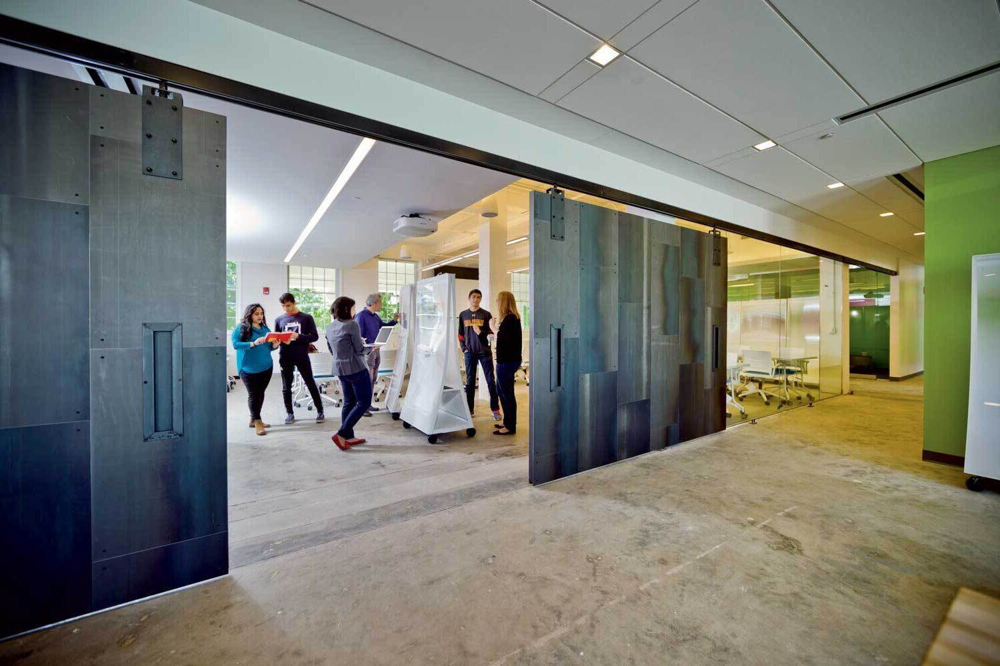
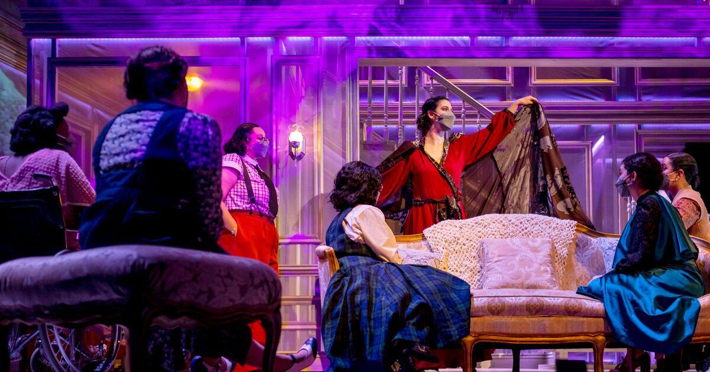
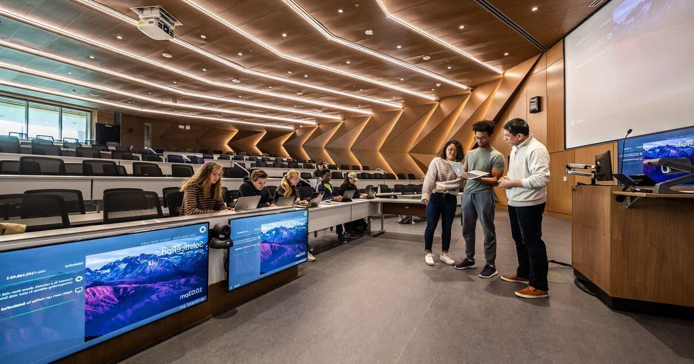
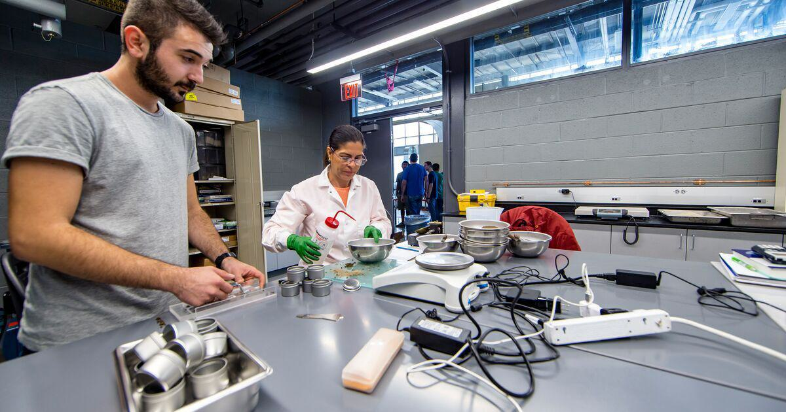
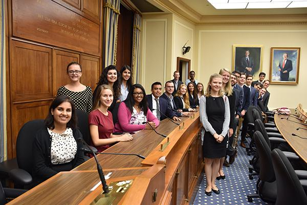
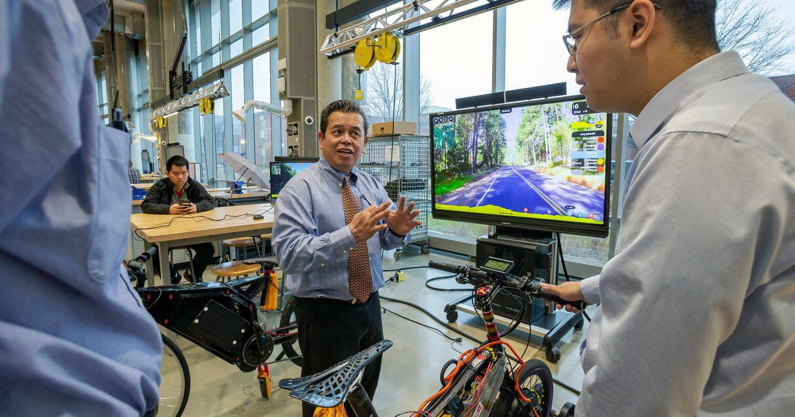
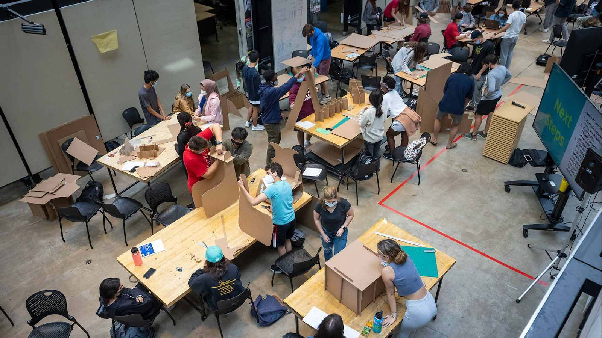
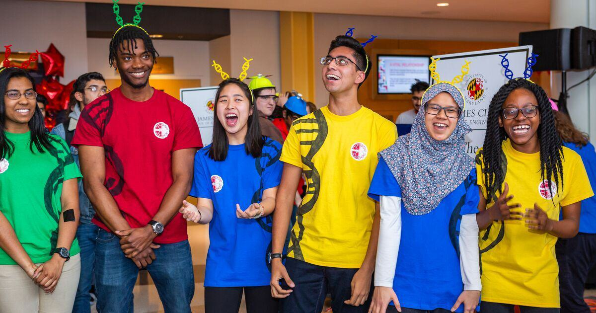

Strategic Commitments
We Reimagine Learning
We reimagine learning and teaching as inclusive, experiential, publicly engaged, creative, integrative, holistic, and empowering.
Fearlessly Forward Initiatives

Teaching Innovation Grants
The University of Maryland's Teaching Innovation Grants support innovative educational projects designed to prepare our students with effective, engaging, and enriching learning experiences.

Arts for All
The Arts for All initiative partners the arts with the sciences, technology and other disciplines to develop new and reimagined curricular and experiential offerings that nurture different ways of thinking to spark dialogue, understanding, problem solving and action.

Learning Environment Modernization
The University of Maryland is accelerating the expansion and development of accessible, smart, and learner-centered environments to support innovative pedagogical practices, foster students' creativity and enable collaboration.

Office of Undergraduate Research
The Office of Undergraduate Research collaborates with students, faculty and staff across departments to broaden the culture and community around undergraduate research and scholarly activities campuswide.

Investing in Special Undergraduate Programs
The University of Maryland has been nationally recognized for our undergraduate teaching and learning communities, and much of that comes from our investments in special undergraduate programs.
Strategic Commitment Goals

Goal 1
Lead in the development of innovative and inclusive approaches for teaching and learning.

Goal 2
Expand the use of high-impact experiential learning to ensure every student has the opportunity to learn through public service, civic engagement, internships, and project-based experiences.

Goal 3
Create opportunities for multidisciplinary collaboration that fosters creative expression, discovery, and critical thinking.
FEARLESSLY FORWARD IN PURSUIT OF EXCELLENCE AND IMPACT FOR THE PUBLIC GOOD: THE UNIVERSITY OF MARYLAND STRATEGIC PLAN is a living document and will evolve and grow as we do. Please visit this site to follow our progress as we move fearlessly forward.
Teaching Innovation Grants
Each cycle of Teaching Innovation Grants focuses on a different theme in support of our commitment to reimagine learning at UMD.
- Active and experiential learning: In Spring 2022, UMD launched a round of grants to support innovative educational projects focused on expanding active and experiential learning. Through the grants, a total of 115 projects were awarded totalling $2.7 million, directly impacting 19,171 students-seats, 296 courses, and 86 academic programs. The report on the 2022 initiative demonstrates the program's broad impact, highlights and remarkable accomplishments. Survey data show an overwhelmingly positive response from our students concerning their course experience.
- Intersection of education and technology: The 2023 grant program awarded funding to projects that use innovative educational technology to create more effective, engaging, and inclusive learning experiences that prepare our students to navigate a technology-rich world. The program awarded $1.3 million in grants to 24 projects to emphasize the intersection of education and technology, including AI, virtual reality and gamification. In all, the grants are projected to bolster 73 courses with over 32,000 student seats across 10 academic units.
- Inclusive and accessible teaching: The current Teaching Innovation Grants cycle will support course-based projects that maximize student engagement through accessible and inclusive pedagogical practices.
Arts for All
Arts for All works toward three major goals:
- Making the arts more accessible to and representative of our community
- Placing the arts in dialogue with the sciences and technology
- Leveraging the community-building and community-sustaining power of the arts
Arts for All has expanded and enhanced academic, campus and community programs since its inception. In 2024, Arts for All saw notable growth in the undergraduate minor in Arts Leadership and undergraduate major in Immersive Media Design–which has more than doubled in just two years. Two additional academic programs include the Creative Placemaking minor and post-baccalaureate certificate in Arts Management. In addition, The New Works Incubator, part of the Immersive Media Design program, has steadily increased in size, nearly doubling its enrollment since 2022.
Arts for All awarded 51 grants totaling $202,940 in 2024, up from 23 grants and $82,000 in 2023. These grants supported student and faculty research and activities across 10 colleges, and included funding collaborations with the Do Good Campus Fund and the Division of Research. Arts for All also created the inaugural cohort of 10 faculty and 5 graduate student Arts for All Fellows and provided support for two artists-in-residence in 2024.
The annual NextNOW Festival saw a 68% increase in attendance in 2024 with more than 6,750 individuals across 50 events.
Learning Environment Modernization
New changes to classrooms are expanding opportunities for instructors and students for active and engaged learning. This includes:
- New hybrid-flexible classrooms to allow in-person and remote students to interact seamlessly
- New TERP classrooms that expand collaborative, student-centered, team-based modes of teaching and learning
- New student lounge/informal learning spaces have been created in key academic buildings with high classroom densities
- Several computer lab and classroom technology upgrades
Through an investment of more than $11 million, the Learning Environment Modernization program has completed nearly 140 projects to-date, impacting more than 75,000 student seats.
In 2024, a record number (42) of classrooms across all regions of campus were renovated, and 46 classrooms received AV system upgrades. In addition to the formal teaching spaces, informal study spaces in three academic buildings were created to meet the growing demand for accessible student lounge space.
Office of Undergraduate Research
The Office of Undergraduate Research (OUR) offers a range of resources and programs to help all undergraduates start or advance their research, and allows faculty members, academic units, and existing programs to support and coordinate research engagement.
In 2024, OUR designed and launched two major events, Undergraduate Research Day and the Summer Undergraduate Research Conference, allowing nearly 600 undergraduate students from a broad range of campus disciplines to communicate their research outcomes.
In the summer of 2024, OUR operated the Immersive Research Internship Experience and the Student-Proposed Innovation & Research Experience, serving 130 undergraduate students. OUR continues to oversee The First-Year Innovation & Research Experience, driving high levels of authentic research engagement and career readiness in more than 1,200 early-matriculation undergraduate students, annually.
As the result of a Teaching Innovation Grant award received in 2023, OUR developed and deployed high-quality open-access educational materials to empower students of broad backgrounds to begin university research. Undergraduate Research Opportunities and Competencies was launched in September of 2024 and currently has over 900 undergraduate students enrolled.
OUR began designing and delivering the first in a series of workshops focused on helping undergraduates pursue research opportunities. The first workshop, focused on National Science Foundation Research Experiences for Undergraduates, had more than 100 students attend.
Investing in Special Undergraduate Programs
The University of Maryland's special undergraduate programs, including its signature living-learning programs, have been enhanced to provide more opportunities that foster learning inside and outside of the classroom.
The Honors College has added two new programs. Interdisciplinary Business Honors, a partnership with the Smith School, challenges students to imagine the future of work and business across fields and in connection with the grand challenges of our time. Honors Global Challenges and Solutions, a partnership with the College of Behavioral and Social Sciences, draws on social data science to critically examine a wide range of global problems, with the opportunity for policy internships in the Washington, D.C., area. In addition, new investments help to secure the future of the ACES cybersecurity program.
College Park Scholars has also added two new programs. In Civic Engagement for Social Good (previously known as CIVICUS), a partnership with the College of Behavioral and Social Sciences, students work with organizations addressing a range of contemporary societal challenges. Data Justice, a partnership with the College of Information, provides students an opportunity to interrogate the biases that are built into information collection, design, and analysis. In addition, College Park Scholars is undertaking a range of new initiatives across all its programs, including curricula, alumni engagement, diversity, and community engagement.
New investments in some of the university's longest-standing living-learning communities enable developments within and across College of Arts and Humanities programs, including Design Cultures & Creativity and Honors Humanities (both in the Honors College); Arts (College Park Scholars); Language House, in which residents develop fluency in a target language and its culture; and Jiménez-Porter Writers' House, a literary center for the study of creative writing across cultures and languages.
The UMD Fellows Program equips diverse, civically-minded undergraduate students from all majors to pursue impactful careers, particularly in the public sector. The UMD Fellows Program launched the Maryland Fellows branch, emphasizing state and local public service, with students interning at the Maryland General Assembly. Additionally, the program introduced a new concentration: Strategic Thinking, AI, and Innovation Power.
Goal 1
Lead in the development of innovative and inclusive approaches for teaching and learning.
Objectives
- Expand accessibility of our educational programs through equitable, flexible, inclusive approaches to instructional design and delivery.
- Rethink and reconfigure our learning environments to balance, integrate, and leverage universal design, technology-rich education, and human connection.
- Unlock the potential of our campus as a green, connected living-learning environment that is open and accessible to the global community.
- Imagine new possibilities for advancing lifelong learning with technology and new forms of engagement for learners of all ages.
Goal 2
Expand the use of high-impact experiential learning to ensure every student has the opportunity to learn through public service, civic engagement, internships, and project-based experiences.
Objectives
- Provide opportunities throughout the educational journey for internships, research experiences, and other applied learning experiences.
- Develop and coordinate volunteer and civic engagement opportunities and encourage undergraduate and graduate students to engage in work in support of the public good.
- Grow events and programs that enable students to connect with local community members, organizations, and businesses for civic development, employment, and other forms of learning.
Goal 3
Create opportunities for multidisciplinary collaboration that fosters creative expression, discovery, and critical thinking.
Objectives
- Build partnerships among the arts, humanities, science, technology, and other disciplines to develop new curricular and experiential offerings that nurture different ways of thinking to spark dialogue, understanding, problem solving, and action.
- Support indoor and outdoor spaces on campus to advance learning, inspire discovery, and activate creativity.